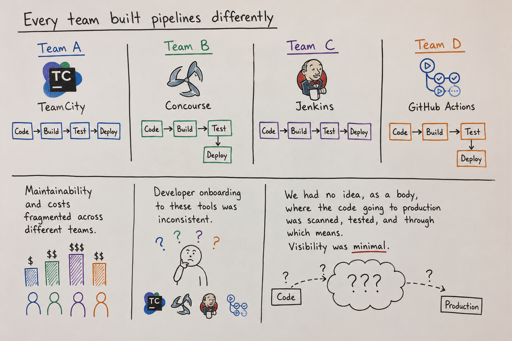

CI/CD Platform

Problem
3,000+ engineers. 300,000+ repositories. No standard way to ship code.
Every team built pipelines differently — TeamCity, Concourse, Jenkins, GitHub Actions.
Maintainability and costs were fragmented across different teams.
Developer onboarding to these tools was inconsistent.
We had no idea, as a body, where the code going to production was scanned, tested, and through which means. Visibility was minimal.
Discovery
We interviewed engineering teams across the organization to understand how software was being built and deployed.
We documented common workflows, identified shared tooling, and looked for opportunities to standardize the developer experience.
We found that nearly every team followed the same core workflow:
- Install dependencies
- Build
- Run unit tests
- Run static analysis
- Deploy
Identified the tools, POC'd each one, and evaluated which we wanted to tackle for consolidating to a single tool. GitHub Actions was a clear winner.
Why GitHub Actions?
Pros
- Everyone's code already lived in GitHub
- Growing infrastructure and support for packages and workflows
- Could use GitHub runners to run the code
- Teams wouldn't need to leave GitHub
- Secret management by repo
- We were already paying for GitHub EMU, and Actions came included as part of it — made sense cost-wise in the long run
Challenges
- Immature enterprise feature set
- Required custom reusable workflows
- Runner infrastructure costs
- API rate limits
- Workflow architecture constraints
The First POC
I partnered on the first end-to-end CI/CD proof of concept, proving GitHub Actions could satisfy our enterprise software delivery requirements.
This included:
- Source checkout
- npm environment provisioning
- Dependency installation
- Unit testing
- Security scanning
- Docker image creation
- Artifact publishing
- Enterprise deployment
What We Built
I then switched my focus to making and maintaining the reusable components across the stack and own the runner infrastructure.
Over the next few years, the proof of concept became the foundation of our internal CI/CD platform. This was a true team effort.
- Full Onboarding Documentation
- ARC runners
- Reusable workflows
- Meta pipeline
- Unit test uploads
- Security scanning
- Artifact management
- Standardized change request creation
- Attestation tracking
All of it funnels through one deployment platform at the end, to a managed Kubernetes infrastructure.
Language support rollout order
- 1. npm/JS
- 2. Maven/Java
- 3. Python
- 4. Go
Impact
3,000+ engineers
300,000+ repositories
Lessons
What I'd Change
I would have built the reusable components before the meta pipeline, and limited the depth of reusable workflows so we didn't hit platform limits.
The meta pipeline was cool — once you're on it, you fly. Teams didn't need to maintain security findings in downstream packages or update external packages and dependencies in their workflows themselves; the platform (us) handled it.
But it's hard to onboard onto: users only get visibility into inputs at the top level, not into the depth of the whole pipeline underneath. Those inputs get mapped through a set of reusable workflows and actions we defined, and when you're dealing with actions and filesystems across runners, that's a real challenge — it made onboarding harder for teams.
I would have added comprehensive documentation sooner than we did.
Tradeoffs
Standardization vs. flexibility: enforcing a single opinionated pipeline improved maintainability and consistency at scale, but reduced teams' ability to handle edge cases. Over time, this also made the meta-pipeline harder to onboard onto.
For those scenarios, we encouraged teams to compose reusable components and run custom workflows in their own order rather than relying on the meta-pipeline.
However, that rigidity increased support load and onboarding friction, as teams needed more hands-on guidance to fit within the framework. It also consumed engineering time that could have gone toward building features or addressing system-level issues. We often found ourselves reasoning about edge cases from a constrained, "paved road" perspective, with limited ability to accommodate deviations without undermining the model itself. We bent where we had to, yet stayed firm the other times — it was a process.
Architecture...